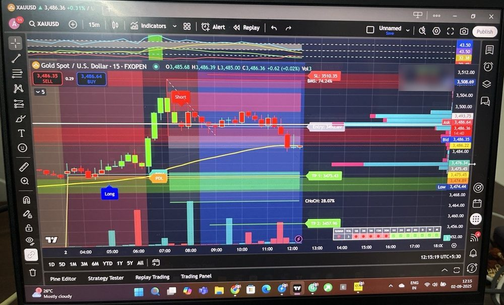
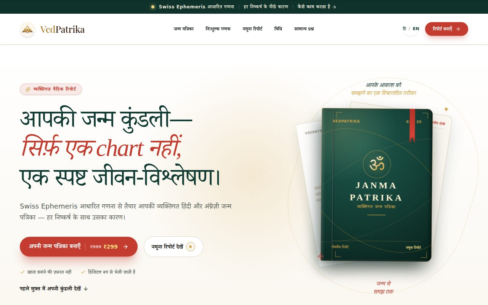
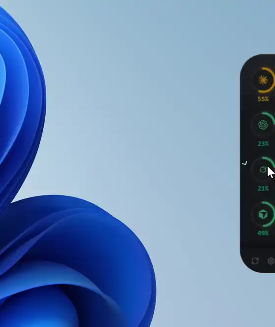

Café owner · Trader · Self-taught builder
From a café counter
to AI agents.
I didn't come to software through a CS degree. I came through customers, markets, and a lot of curiosity. When AI made building possible for one person, I started shipping, and I haven't stopped. This page is that journey, with proof at every stop.
Open to roles and projects in AI agents & automationThe journey
Every stop taught me something the next one needed.
Always
The tech enthusiast who never shipped
I've always been the person who tries new tech first. But for years that meant using software, not making it. Building felt like something other people did.
2018 – 2022 · Gwalior
Kitty Café
I founded and ran Kitty Café in Gwalior. Within a year it was among the top 10 cafés in the city, serving 100+ customers a day with a team of eight. I handled complaints at the counter, vendors, inventory and the P&L myself.
COVID closed it. Hard lesson, and it pushed me to look at what else I could build.
2022 – present
Markets
I started trading Indian equities, then moved into crypto and gold. Alongside, I took freelance technical support work: triaging API failures, server misconfigurations and webhook issues, and writing clear root-cause notes for clients.

2025
AI walks in
Last year AI changed how I work. With Claude and agent setups like OpenClaw, the gap between "I wish this existed" and working software got small enough for one person to cross in an evening.
So I stopped waiting to "learn to code first". I learned by shipping: small tools, then bigger ones, working through what the agents wrote and fixing what broke.
2026 · First builds
Tools for agents, then an engine
My first public projects were the things my own agents needed:
- AgentRelay Apr
WebSocket relay so agents can talk to each other with rate limits and an identity registry. - astro-skill Jul · open source
Vedic astrology engine on Swiss Ephemeris: kundali, dasha, panchang, guna milan, bilingual PDFs. No API keys. - MindSync AI Jul · on PyPI
Local-first MCP orchestrator that routes work across Claude, Codex, Gemini and others, with shared memory and path locking.
2026 · August
VedPatrika goes live
The astro engine became a real product at vedpatrika.in: a bilingual Janma Patrika anyone can order. I built and run all of it: the Next.js site, the Python API, Cashfree payments, delivery over the WhatsApp Cloud API with approved templates, email, free calculators and SEO.

2026 · Aug – Sep
A fleet that works while I sleep
I run a small team of AI agents on my own Linux server, controlled from Telegram: an assistant that ships code and runs ops, a content pipeline, scheduled research and reports, with shared long-term memory in Postgres.
- Agent Notch
A Windows desktop HUD for live AI coding-agent quotas. - GWS Marketing MCP
Search Console, GA4 and Workspace for agents, with scoped OAuth. It now sends me a weekly SEO report on its own. - Smart File Organizer
Zero-dependency Downloads/Desktop organizer with undo.


Now
What I'm building
Agent Notch: alerts the moment an agent is stuck waiting for approval, and one click to its terminal.
MindSync: working on v2.
VedPatrika: growing it, one honest improvement at a time.
Proof of work
Straight from GitHub, refreshed every night. Most of the work lives in private repos, so it shows up here as squares, not names.
How I work
What the café, the markets and the code have in common.
Customer first
Years at a café counter. I find the real problem before I build.
Plain language
I explain technical things simply, in Hindi and English.
Ship, then verify
Small releases, checked in the real product before I call them done.
Honest numbers
No fake reviews, no inflated metrics. Proof over claims.